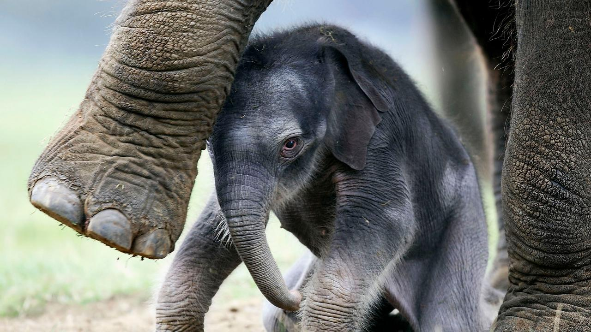

Elephant Sanctuary
Elephants Sanctaury is a safe haven for calfs lost in the wild and separated from their families. We offer medical care and emotional connection to newborn calfs and those recovering from injuries resulting from predator attacks,dieases and human set traps.
Elephants are the largest land animals on Earth, and they're one of the most unique-looking animals, too. With their characteristic long noses, or trunks; large, floppy ears; and wide, thick legs, there is no other animal with a similar physique.
Conservation Status
The International Union for Conservation of Nature and Natural Resources (IUCN) classifies the Asian elephant as endangered. Though it is not known exactly how many Asian elephants remain, experts believe that the population is decreasing. The African elephant is considered vulnerable, according to the IUCN, and the species' population is increasing. According to the African Wildlife Foundation, there are around 415,000 African elephants in the wild. Threats against the survival of both African and Asian elephants include poaching and habitat loss, according to World Wildlife Fund.

Groups of elephants, or herds, follow a matriarchal structure with the eldest female in charge. Herds are composed of primarily female family members and young calves, according to the San Diego Zoo, and include 6 to 20 members depending on the food supply. When the family gets too large, herds often split into smaller groups that stay within the same area. The matriarch relies on her experience and memory to recall where the best spots for food, water are, and where to find protection from the elements. The matriarch is also responsible for teaching the younger members of her family how to socialize with other elephants. Elephants are very social and can communicate with one another and identify other elephants from distances of up to 2 miles using rumbling, low-pitched sounds that fall below the audible range of humans, according to the National Zoo. Elephants readily show good manners to members within its herd and other herds, according to the San Diego Zoo. For example, they use their trunks to greet one another, either by holding it out high or by inserting the end of their trunk into another elephant's mouth. Elephants also pay close attention to the well-being of all the members of their herd, and will do what they can to take care of and protect weak or injured members. They're considered an extremely intelligent species, and have been observed showing advanced problem-solving skills and demonstrating empathy, mourning and self-awareness, according to an article in Scientific American.